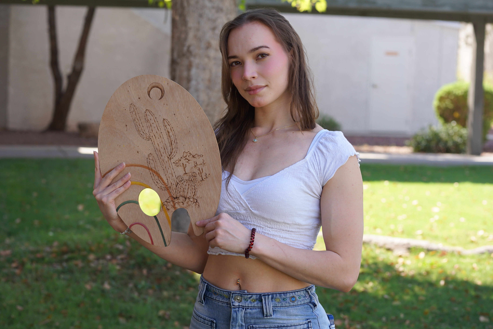

Sydney Kelly Rodriguez
Biography
Born in New Jersey in 1997 to a Puerto Rican father and Costa Rican mother, Sydney grew up surrounded by two rich cultures that continue to shape her creative voice. Her childhood love for drawing evolved into a lifelong passion, nurtured by the vibrant traditions of Puerto Rico, the natural beauty of Costa Rica, and later the vast desert landscapes of Tucson, Arizona, where she has lived since 2023.
Largely self-taught, Sydney also earned an associate’s degree in Graphic Design, refining her sense of composition and visual balance. In 2018, while living in Puerto Rico, she became a certified artisan in pyrography (woodburning), a practice that deepened her connection to cultural heritage and nature-inspired craftsmanship. Though she also holds a professional pastry certification, her heart has always belonged to painting and drawing.
Her work blends surrealism with whimsical, dreamlike imagery, often featuring bold colors and motifs inspired by tropical forests, flora, and fauna. Using watercolors, acrylics, and colored pencils, she creates pieces that feel at once imaginative and deeply personal. Themes of joy, spontaneity, and interconnectedness run through her art, embodied in the Costa Rican expression “Pura Vida!”—a celebration of life’s vibrancy and a reminder to live with gratitude.
Now based in Tucson with her partner, an aerospace engineer she met in Puerto Rico, Sydney continues to explore new directions while staying true to her distinctive style. Her aspiration is clear: to grow as a professional artist while maintaining the unique voice that celebrates her cultural roots and her profound love of nature.
Artist Statement
My colorful paintings are born from a place of both struggle and liberation. I was raised in a strict, cult-like environment where creativity was discouraged. When I tried to create, I was often reprimanded by the adults around me. Modesty and conservatism were over-enforced, and art was expected to be literal and restrained. As I grew older, however, I began to experiment with color and form, pushing against those limitations.
Two recurring symbols often appear in my work: eyes and mushrooms. Eyes represent both judgment and freedom. Growing up under constant watch, I became familiar with the feeling of being observed and evaluated. Yet in my paintings, eyes no longer judge—they keep me company. They are surreal companions, playful and strange, transforming something once oppressive into a source of empowerment.
Mushrooms, on the other hand, fascinate me for their contradictions. Their form is simple and instantly recognizable, yet they are often associated with toxicity or danger. To me, they symbolize resilience—like something sprouting or blooming despite unfavorable conditions. At the same time, their psychedelic associations connect naturally with my surrealist style, allowing me to explore themes of color, fantasy, and altered perception. Sometimes I paint them alongside eyes, sometimes on their own, but together they create a dialogue of transformation and wonder.
Nature has also been a constant inspiration. During my years in Costa Rica, I marveled at toucans and quetzals, convinced they looked as if drawn by a child with crayons. That sense of wonder continues to guide me today.
Through my art, I hope to remind others that creation does not need to be logical.
Joy, imagination, and self-expression are reasons enough.